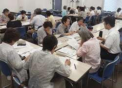

|
|
第53回埼玉県消費者大会実行委員会 7月13日(木)13時30分より、浦和コミュニティセンター第13集会室にて第4回実行委員会が開催され、30人(21団体)と事務局2人が出席しました。 【議題】 1．第3回実行委員会報告（修正・追加の確認を含む）を確認しました 事務局より、第3回実行委員会報告と検討スケジュール報告し、確認しました。 2．基調となる情勢について 前回の実行委員会を受けて、加筆修正した文書を基に話し合いました。今後は、修正意見の反映と減ページについて事務局責任でおこなうことを確認しました。 3．大会アピールについて話し合いました。 前回までの基調となる情勢、埼玉県の課題の話し合いを受けて、事務局で作成した文章をもとに、今大会のアピールについて意見交換をおこないました。今回の意見交換の内容を反映し、次回実行委員会で確定することになりました。 4．大会当日の役割や活動紹介の展示方法について 第3回実行委員会で確認した事項を加筆した文章をもとに、司会・アピール提案などの役割分担、開演前団体紹介、ロビーでの各団体の活動紹介のパネル展示について話し合いました。その結果、次のことを確認しました。
 5．分科会について 映画・社会保障・食・消費者課題の4つのテーマにわかれて話し合いをおこないました。医療生協は、食から社会保障分科会に変更することになりました。 6．お知らせ 消費生活関連事業調査など 次回までのお願い(8/8を目安に)FAXもしくはEメールで送信ください ☆次回の実行委員会(8月17日)への出欠連絡 ☆埼玉県への要請項目（最終） ☆団体紹介パネルの写真と紹介文の提供 |